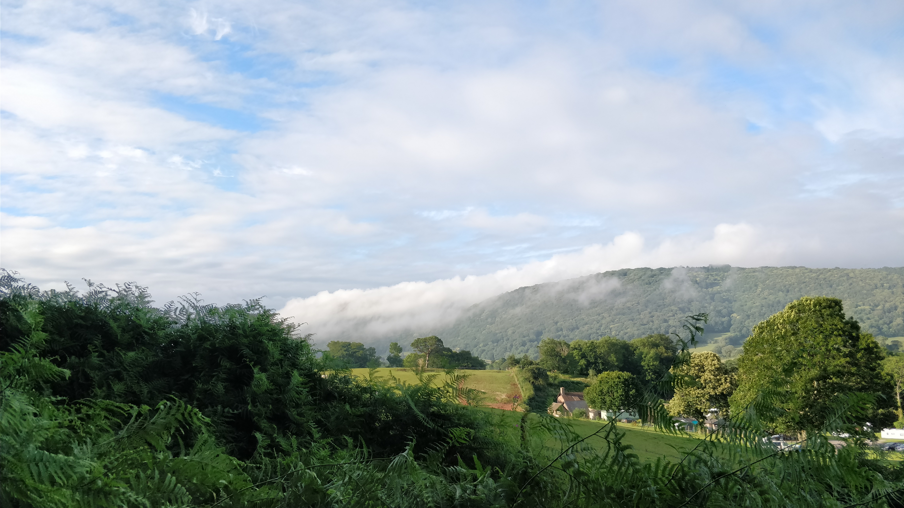
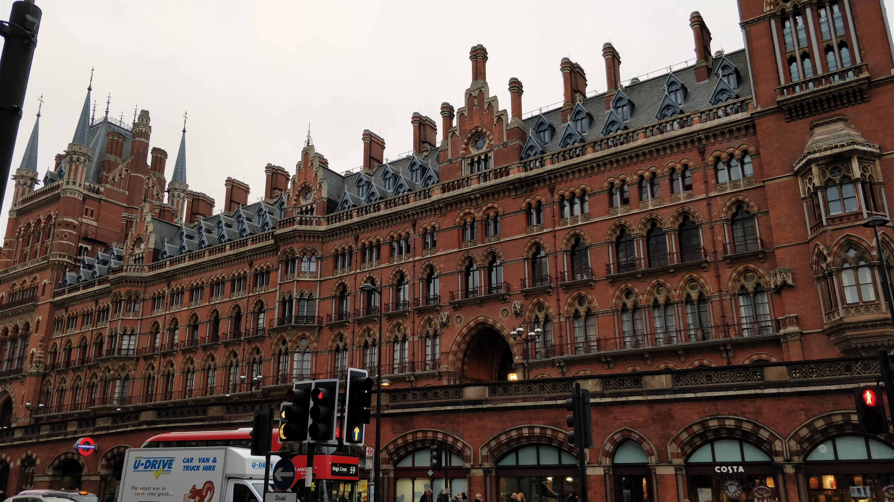

End Of Year Update - 2017
Just a quick recap of the year and what's to come
I never got round to writing a November update and it's almost the end of December now, so I thought why not just make up for it and write an end of year update instead!
Overall, 2017 has been a good year. I got exactly what I wanted for my GCSE results, got 2 months of valuable work experience, started college where I'm making a lot of progress academically. Recently I've had my formal assesments in Maths, Physics and Computing at college and all went well (except for a slight slip up in one of my Maths assesments) which proves that college has been going well so far for me.
Basketball has been getting better and better since the beginning of the season. The pace has picked up now and I've managed to play in two men's games this year in which I recently was the joint 2nd highest scorer. Let's hope the season continues with this form and we win the league!
The bric project's popularity continues to grow with what seems to be a direct proportion with the amount of work I have to do (yay!) which brings me to say that if I were to be able to change one thing it would be to have more time to work on projects of my own away from what I must do at college. I have the desire to start a project but at the end of the day I don't have the drive after completing college and basketball together. Next year I will have to make some decisions on what I'm going to do.
Next year, or whenever I next get more time, I'd like to begin a project that I can continue to work on over the course of a year (or thereabouts). This could happen to tie in well with my second year of my Computer Science A Level as 20% of my final grade. I'm thinking somethign to do with machine learning or AI as it would help me get some experience with the technology and it is something that is brand new to me before and would stretch me enough to keep me interested and working hard.
Finally, today I competed in the British Informatics Olympiad. I managed to write programs for 2 of the 3 challenges but only implemented half of the final challenge. I thoroughly enjoyed the challenge and can't wait to compete again next year.
That's all for now anyway, hopefully I'll manage to get some more programming done!
- 
- 